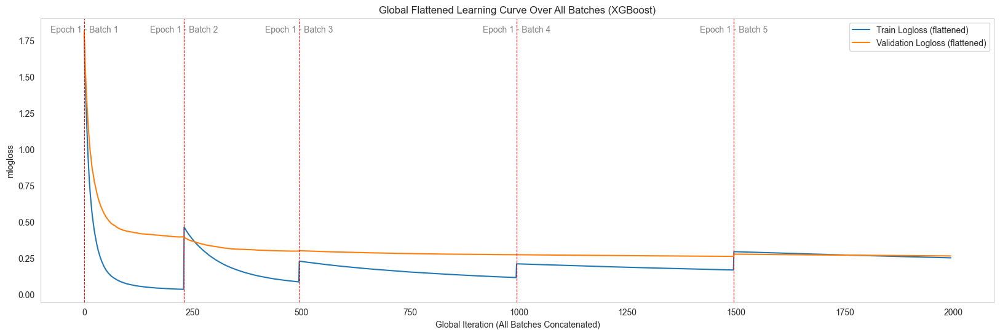
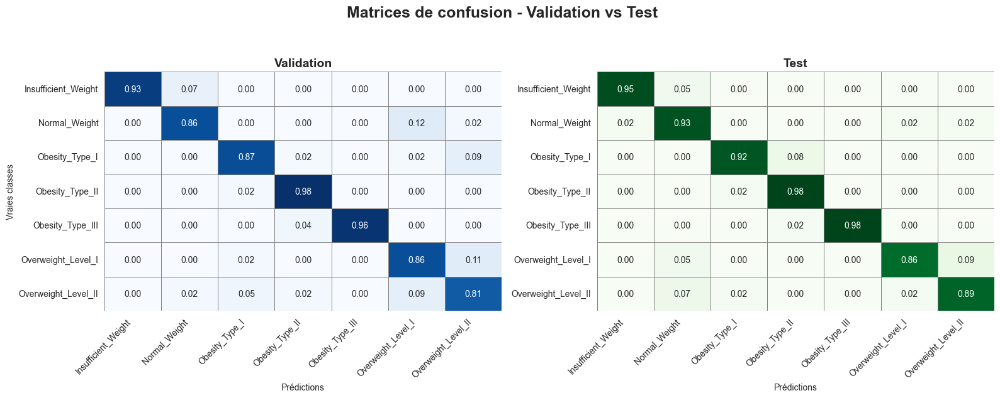
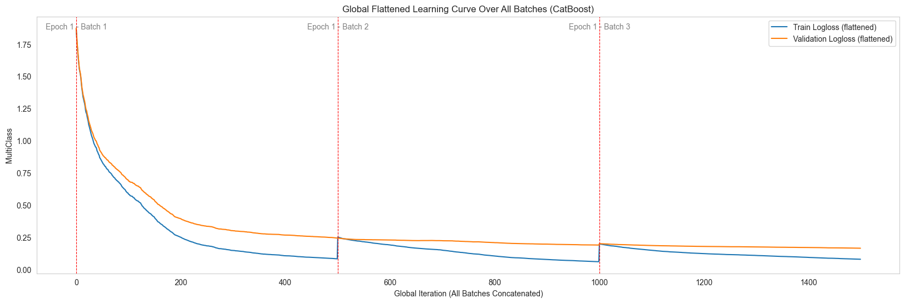
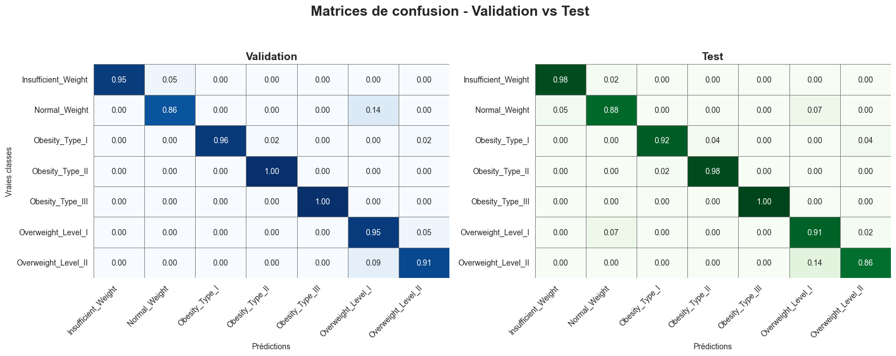
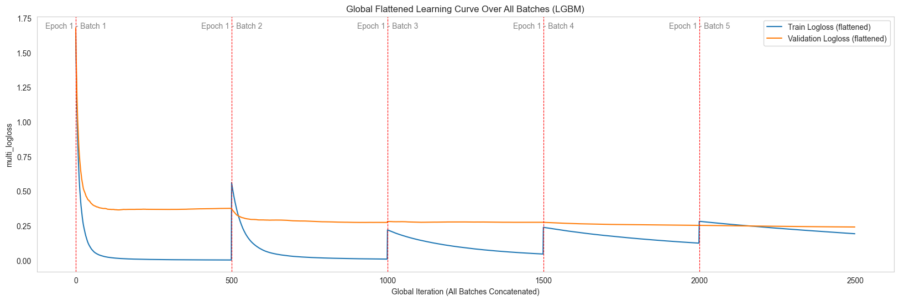
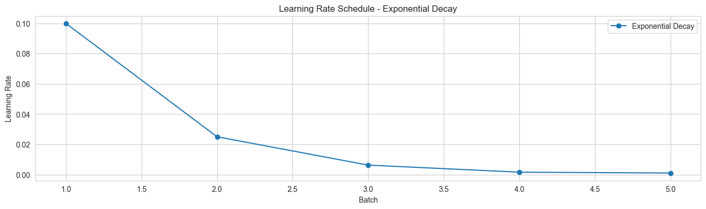

Multiclass Classification Examples
Cette page illustre l’utilisation de Spark Batch Trainer pour un problème de classification multiclasse, en s’appuyant sur le Présentation des datasets (Obesity Dataset).
📌 Objectif : prédire la catégorie d’obésité d’un individu à partir de ses caractéristiques démographiques et comportementales.
Note
La préparation des données (chargement, découpage en train/validation/test, conversion en Spark DataFrames) est décrite en détail dans la section Présentation des datasets.
Dans les exemples ci-dessous, nous supposons que spark_train_df et spark_valid_df sont déjà disponibles et prêts à l’emploi.
—
1. XGBoost Example (Multiclass Classification)
from spark_batch_trainer.trainers.xgboost_trainer import XGBoostTrainer
# 1. Instanciation
trainer = XGBoostTrainer()
target_column = "NObeyesdad" # Colonne cible multiclasse
# 2. Configuration du modèle
config_model = {
"objective": "multi:softprob", # Prédictions multiclasse
"eval_metric": "mlogloss", # Métrique multiclass
"n_estimators": 500, # Nombre d’arbres
"learning_rate": 0.05, # Taux d’apprentissage
"max_depth": 6, # Profondeur max
"reg_lambda": 3.0, # Régularisation L2
"subsample": 0.8, # Sous-échantillonnage des données
"colsample_bytree": 0.8, # Sous-échantillonnage des features
"random_state": 42, # Reproductibilité
"early_stopping_rounds": 10, # Arrêt anticipé
}
# 3. Scheduler du learning rate
config_lr_scheduler = {
"initial_lr": 0.1, # LR initial
"decay_rate": 0.25, # Facteur de réduction
"min_lr": 1e-3, # LR minimal
}
# 4. Entraînement batch-wise
config_training = {
"num_batches": 2, # Nombre de lots
"max_patience": 1, # Patience early stopping global
"show_learning_curve": True, # Afficher les courbes
"use_sample_weight": True, # Gestion pondérations
"verbose": 100, # Niveau de logs
}
# 5. Fit & Evaluation
trainer.fit(
train_dataframe=spark_train_df,
valid_dataframe=spark_valid_df,
target_column=target_column,
config_training=config_training,
config_model=config_model,
config_lr_scheduler=config_lr_scheduler,
)
# 6. Récupération modèle entraîné
trained_model = trainer.get_trained_model()
Résultats visuels
{kind=link}


{kind=link}

—
2. CatBoost Example (Multiclass Classification)
from spark_batch_trainer.trainers.catboost_trainer import CatBoostTrainer
# 1. Instanciation
trainer = CatBoostTrainer()
target_column = "NObeyesdad" # Colonne cible multiclasse
# 2. Configuration du modèle
config_model = {
"loss_function": "MultiClass", # Tâche multiclasse
"eval_metric": "MultiClass", # Métrique de suivi
"iterations": 500, # Nombre d’itérations
"learning_rate": 0.05, # Taux d’apprentissage
"depth": 6, # Profondeur max
"l2_leaf_reg": 3.0, # Régularisation
"auto_class_weights": "Balanced",# Gestion classes déséquilibrées
"bootstrap_type": "Bernoulli", # Type de bootstrap
"subsample": 0.8, # Sous-échantillonnage
"random_seed": 42, # Reproductibilité
"verbose": 100, # Logs détaillés
}
# 3. Entraînement batch-wise
config_training = {
"num_batches": 3, # Nombre de lots
"max_patience": 2, # Patience early stopping global
"show_learning_curve": True, # Afficher la courbe d’apprentissage
}
# 4. Fit & Evaluation
trainer.fit(
train_dataframe=spark_train_df,
valid_dataframe=spark_valid_df,
target_column=target_column,
config_training=config_training,
config_model=config_model,
)
# 5. Récupération modèle entraîné
trained_model = trainer.get_trained_model()
Résultats visuels
{kind=link}

{kind=link}

—
3. LightGBM Example (Multiclass Classification)
from spark_batch_trainer.trainers.lightgbm_trainer import LGBMTrainer
# 1. Instanciation
trainer = LGBMTrainer()
target_column = "NObeyesdad" # Colonne cible multiclasse
# 2. Configuration du modèle
config_model = {
"objective": "multiclass", # Tâche multiclasse
"metric": "multi_logloss", # Métrique multiclass
"num_class": 7, # Nombre de classes (dans ce dataset)
"n_estimators": 500, # Nombre d’arbres
"num_leaves": 31, # Nombre de feuilles
"learning_rate": 0.05, # Taux d’apprentissage
"max_depth": -1, # Pas de profondeur max
"reg_lambda": 1.0, # Régularisation
"subsample": 0.8, # Sous-échantillonnage
"colsample_bytree": 0.8, # Sous-échantillonnage des features
"random_state": 42, # Reproductibilité
"force_col_wise": True, # Optimisation mémoire
"verbose": -1, # Logs réduits
}
# 3. Scheduler du learning rate
config_lr_scheduler = {
"initial_lr": 0.1, # LR initial
"decay_rate": 0.25, # Facteur de réduction
"min_lr": 1e-3, # LR minimal
}
# 4. Entraînement batch-wise
config_training = {
"num_batches": 5, # Nombre de lots
"max_patience": 2, # Patience early stopping global
"show_learning_curve": True, # Afficher la courbe d’apprentissage
"use_sample_weight": True, # Gestion pondérations
"eval_metric": "multi_logloss", # Métrique de suivi
}
# 5. Fit & Evaluation
trainer.fit(
train_dataframe=spark_train_df,
valid_dataframe=spark_valid_df,
target_column=target_column,
config_training=config_training,
config_model=config_model,
config_lr_scheduler=config_lr_scheduler,
)
# 6. Récupération modèle entraîné
trained_model = trainer.get_trained_model()
Résultats visuels
{kind=link}

{kind=link}

{kind=link}
—